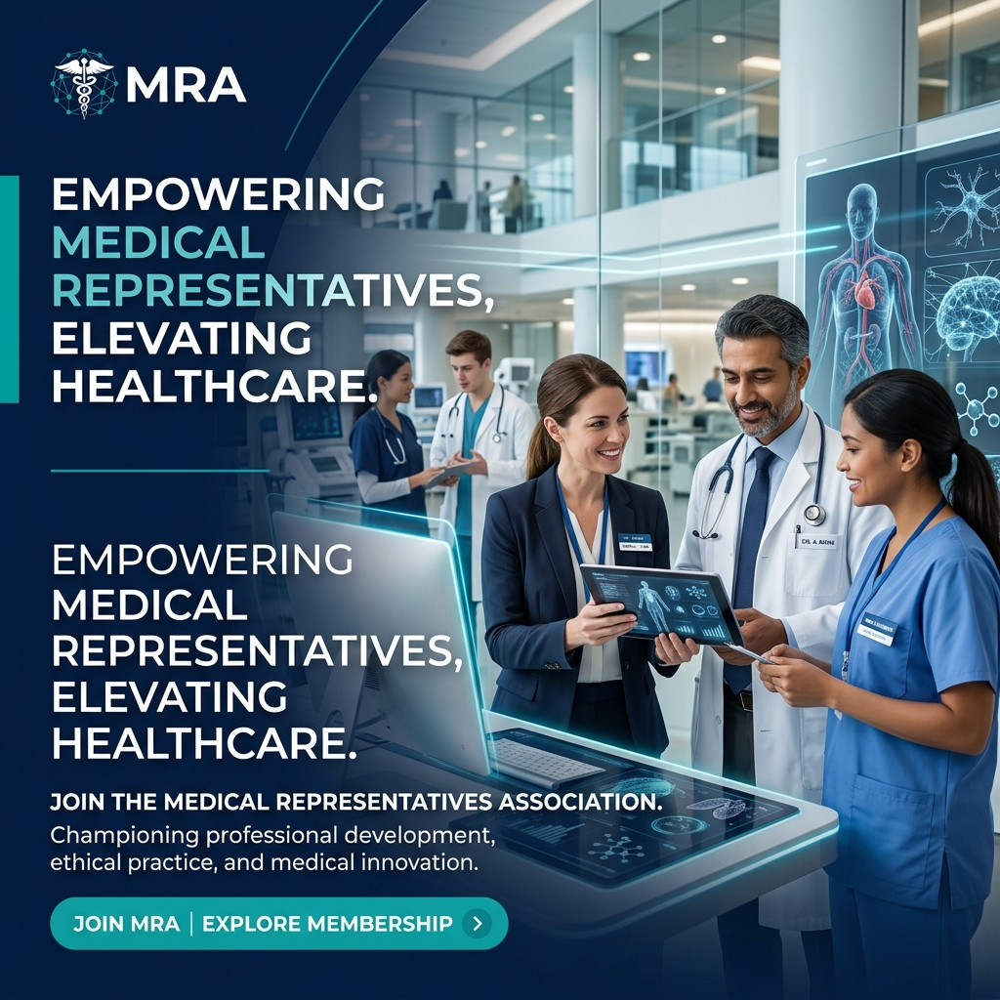

Our Impact & Heritage
A glimpse into how we began and our commitment to serving the community of Kandy.
Bridging the gap between pharmaceutical innovation and healthcare delivery. KMRA is dedicated to improving professional standards, ethics, and career development for medical representatives in the hill capital.

A professional collective driving excellence, collaboration, and ethical conduct in medical representation.
Established to represent the voice of medical representatives in the Kandy region, the Kandy Medical Representatives Association (KMRA) has been at the forefront of career enrichment, community leadership, and healthcare support systems. We provide our members with platforms for skill development, networking opportunities, and platforms to participate in impactful healthcare initiatives throughout the central province.
Discover the benefits, learning assets, and supportive network waiting for you.
Access exclusive training seminars, sales coaching, and lectures delivered by top industry professionals to advance your pharmaceutical career.
Connect with a vast network of colleagues, industry veterans, and healthcare leaders to share resources and resolve challenges collectively.
Uphold the highest ethical guidelines defined by our Code of Conduct, ensuring medical representations remain professional, respectful, and reliable.
A glimpse into how we began and our commitment to serving the community of Kandy.